lorenz_partial_25d_additive_mse_p30_obsnoise001__lc_sweepProject: Lorenz_INDpartial_N25_D1_NormTrue_T3__JacobianODE
Launched: 2026-04-17T01:50:10Z
Completed: 2026-04-17T06:05:17Z
Outcome: complete_clean
Git: latent-JacobianODE @ f05d2ea
Expected runs: 9
lorenz_partial_25d_additive_mse_p30Description
Partial-obs Lorenz: x-coordinate only (observed_indices=[0]), n_delays=25, delay_spacing=1. Encoder input 25-D, z_dyn 3-D, z_null 22-D with kl_null_weight=0. Additive coupling encoder, joint training, reconstruction_mode='most_recent'. Plain MSE loss. prediction_steps=30, seq_length=45. obs_noise_scale=0.
Hypothesis
A longer prediction horizon sharpens the forward-rollout training signal, which in partial-obs has been the main limiter of spectrum recovery. Expecting tighter λ_min (less under-contracted than the 10-step baseline) and improved trajectory_r2.
Success criteria
Swept axes (1): training.lightning.loop_closure_weight
Chosen run (by best_traj_loss): 3gce9ryf — traj_loss=0.00180, MASE=0.8514, R²=0.9952, LC loss=0.578, epoch=131.0
Swept-axis values at chosen run: training.lightning.loop_closure_weight=1.0e-06
⚠️ 1 run_idx slot(s) had multiple matching wandb runs — the best by best_traj_loss was kept; the others are listed below for audit:
- run_idx=4: chose 5lqf1gme, dropped 21w6wh3x
Runs analyzed: 9 (expected 9)
| run_idx | run_id | training.lightning.loop_closure_weight |
best_traj_loss | best_MASE | R² | LC loss | epoch |
|---|---|---|---|---|---|---|---|
| 1 | 3gce9ryf |
1.0e-06 | 0.00180 | 0.8514 | 0.9952 | 0.578 | 131.0 |
| 2 | dowi8tde |
1.0e-05 | 0.00216 | 0.9057 | 0.9942 | 0.358 | 119.0 |
| 4 | 5lqf1gme |
0.001 | 0.00238 | 0.9599 | 0.9936 | 0.035 | 129.0 |
| 0 | 9rd7jg07 |
0 | 0.00402 | 1.2571 | 0.9892 | 0.659 | 48.0 |
| 3 | 7c7e0p4v |
1.0e-04 | nan | nan | nan | 1.590 | — |
| 7 | i2b4ofgn |
1 | 0.00464 | 1.4678 | 0.9875 | 0.000 | 102.0 |
| 8 | sxk2jqcn |
10 | 0.00512 | 1.6694 | 0.9863 | 0.000 | 109.0 |
| 5 | 2u74lfxy |
0.01 | 0.00540 | 1.4151 | 0.9854 | 0.000 | 117.0 |
| 6 | ae26uqz2 |
0.1 | 0.00729 | 1.7264 | 0.9803 | 0.000 | 49.0 |
| Criterion | Verdict | Note |
|---|---|---|
| Best run's leading Lyapunov exponent > 0 | Unknown | |
| Best run's predicted Lyapunov spectrum within ~40% of empirical | Unknown | |
| Noticeable improvement in λ_min recovery vs p10 partial_25d_mse | Unknown |
Automated verdicts use simple numeric-threshold parsing and may mis-classify qualitative criteria. The Discussion section below takes precedence.
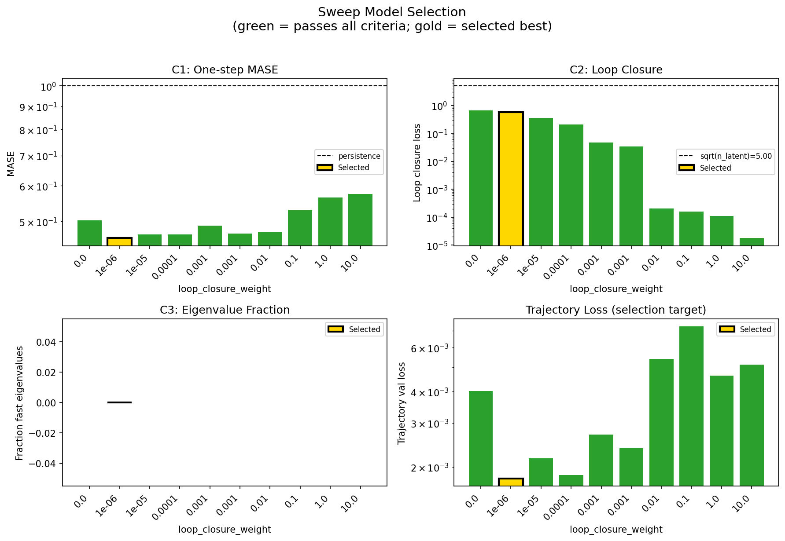
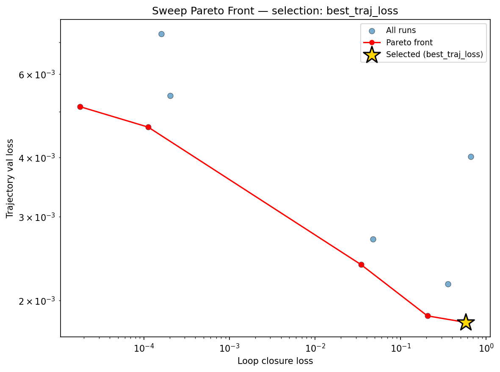
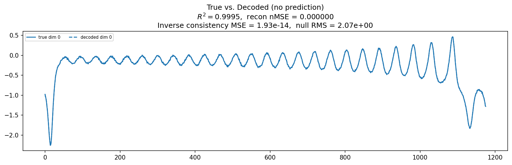
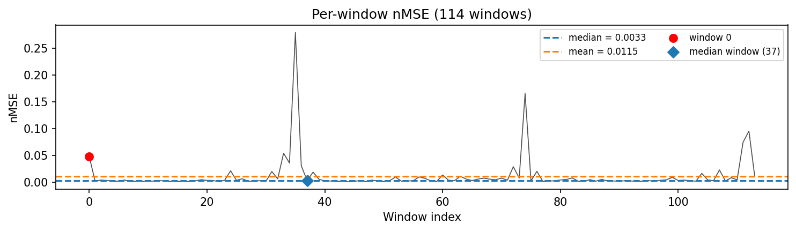
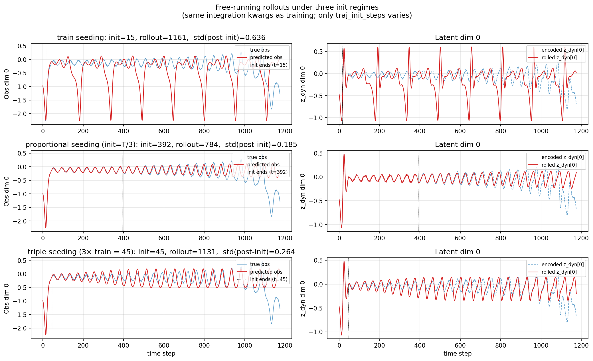
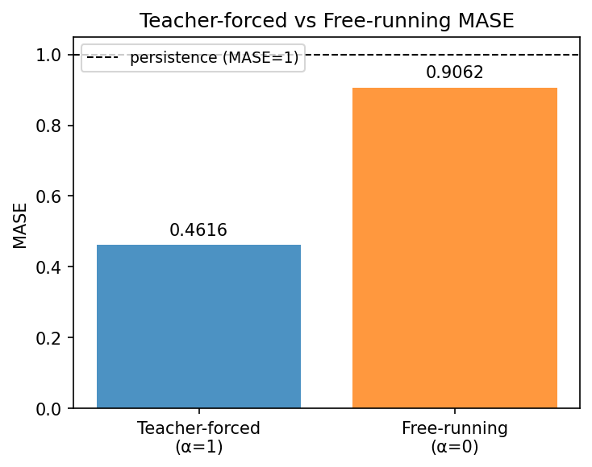
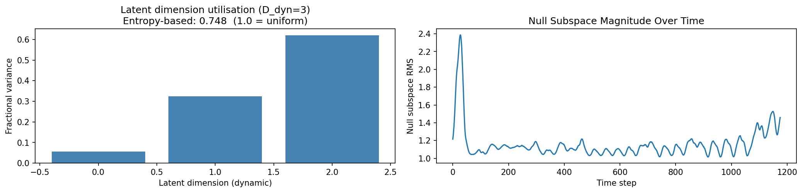
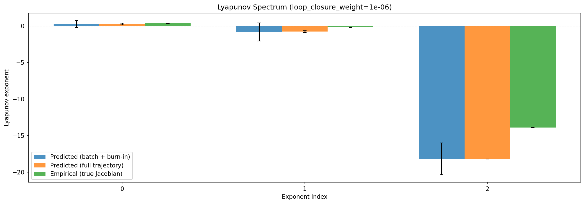
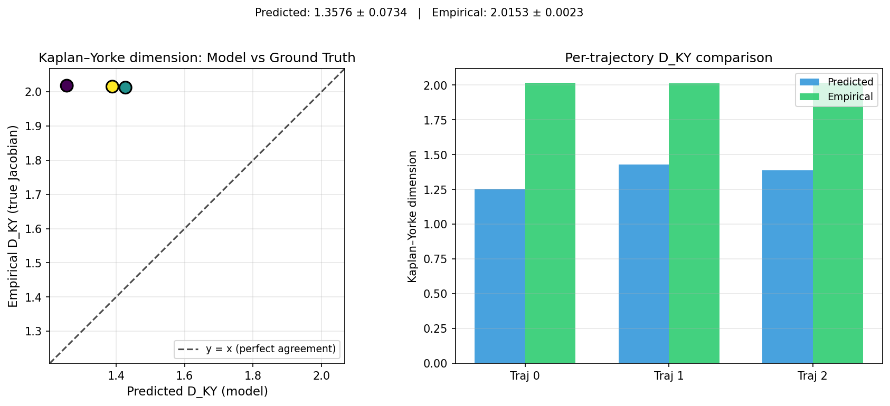


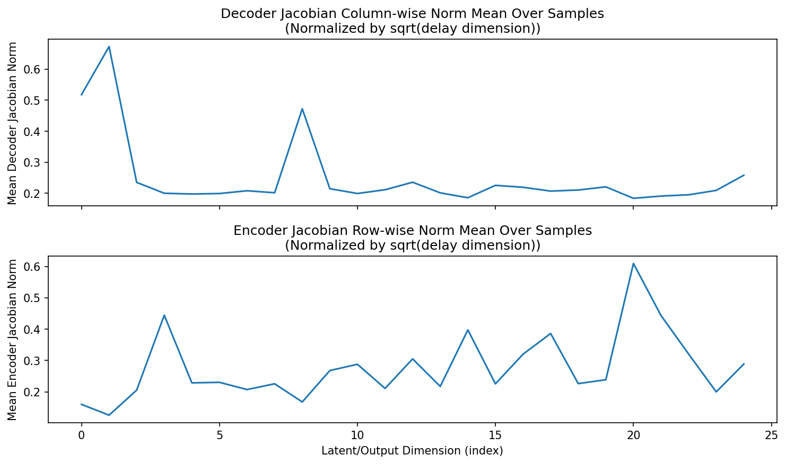
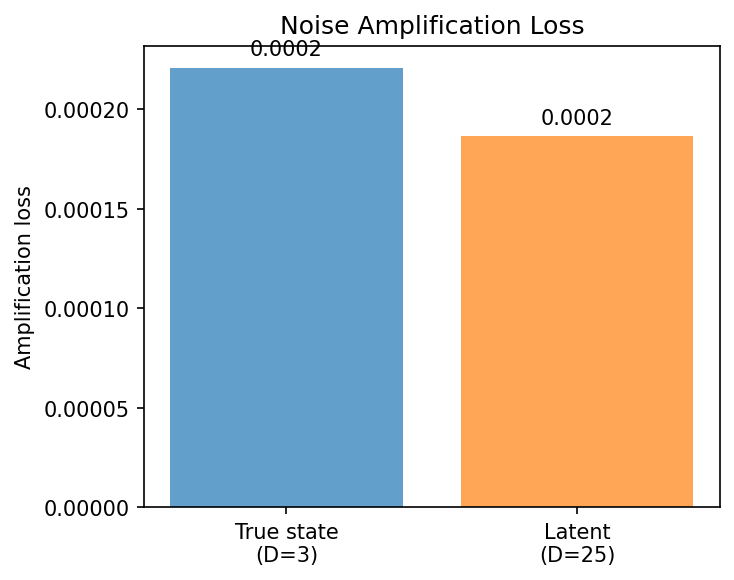
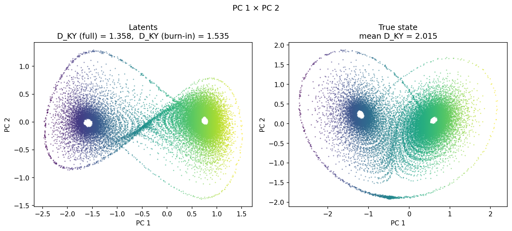
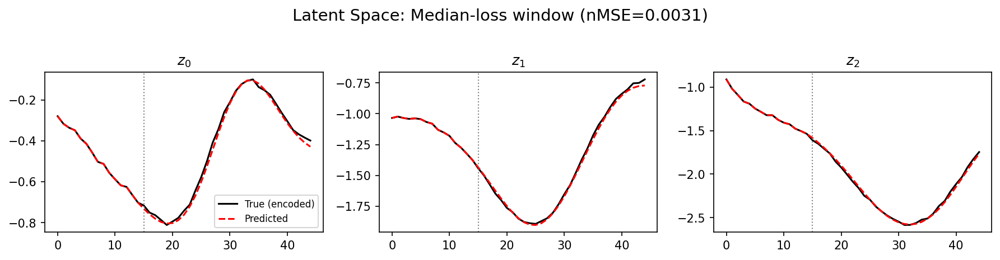
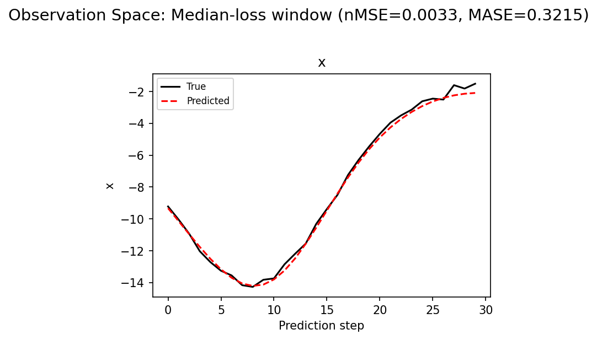
(to be written)
run_analytics stdoutrun_analyticsNo run_id provided — selecting best run from group 'lorenz_partial_25d_additive_mse_p30_obsnoise001__lc_sweep' ...
Found 10 total runs in JacobianODE/Lorenz_INDpartial_N25_D1_NormTrue_T3__JacobianODE (group=lorenz_partial_25d_additive_mse_p30_obsnoise001__lc_sweep)
All runs (state, loop_closure_weight, tangent_entropy_weight, kl_dyn_weight):
9rd7jg07: state=finished, lc=0.0, te=0.0, kl_dyn=0.0
5lqf1gme: state=finished, lc=0.001, te=0.0, kl_dyn=0.0
dowi8tde: state=finished, lc=1e-05, te=0.0, kl_dyn=0.0
2u74lfxy: state=finished, lc=0.01, te=0.0, kl_dyn=0.0
3gce9ryf: state=finished, lc=1e-06, te=0.0, kl_dyn=0.0
7c7e0p4v: state=finished, lc=0.0001, te=0.0, kl_dyn=0.0
ae26uqz2: state=finished, lc=0.1, te=0.0, kl_dyn=0.0
i2b4ofgn: state=finished, lc=1.0, te=0.0, kl_dyn=0.0
sxk2jqcn: state=finished, lc=10.0, te=0.0, kl_dyn=0.0
21w6wh3x: state=crashed, lc=0.001, te=0.0, kl_dyn=0.0
slurm_timeout_min not found in any run config — falling back to 180 min
Including 9rd7jg07 (lc=0.0): use_all_runs=True (state=finished)
Including 5lqf1gme (lc=0.001): use_all_runs=True (state=finished)
Including dowi8tde (lc=1e-05): use_all_runs=True (state=finished)
Including 2u74lfxy (lc=0.01): use_all_runs=True (state=finished)
Including 3gce9ryf (lc=1e-06): use_all_runs=True (state=finished)
Including 7c7e0p4v (lc=0.0001): use_all_runs=True (state=finished)
Including ae26uqz2 (lc=0.1): use_all_runs=True (state=finished)
Including i2b4ofgn (lc=1.0): use_all_runs=True (state=finished)
Including sxk2jqcn (lc=10.0): use_all_runs=True (state=finished)
Including 21w6wh3x (lc=0.001): use_all_runs=True (state=crashed)
Found 10 effectively-done sweep runs:
loop_closure_weight=0.0, tangent_entropy_weight=0.0, kl_dyn_weight=0.0 -> run_id=9rd7jg07
loop_closure_weight=1e-06, tangent_entropy_weight=0.0, kl_dyn_weight=0.0 -> run_id=3gce9ryf
loop_closure_weight=1e-05, tangent_entropy_weight=0.0, kl_dyn_weight=0.0 -> run_id=dowi8tde
loop_closure_weight=0.0001, tangent_entropy_weight=0.0, kl_dyn_weight=0.0 -> run_id=7c7e0p4v
loop_closure_weight=0.001, tangent_entropy_weight=0.0, kl_dyn_weight=0.0 -> run_id=21w6wh3x
loop_closure_weight=0.001, tangent_entropy_weight=0.0, kl_dyn_weight=0.0 -> run_id=5lqf1gme
loop_closure_weight=0.01, tangent_entropy_weight=0.0, kl_dyn_weight=0.0 -> run_id=2u74lfxy
loop_closure_weight=0.1, tangent_entropy_weight=0.0, kl_dyn_weight=0.0 -> run_id=ae26uqz2
loop_closure_weight=1.0, tangent_entropy_weight=0.0, kl_dyn_weight=0.0 -> run_id=i2b4ofgn
loop_closure_weight=10.0, tangent_entropy_weight=0.0, kl_dyn_weight=0.0 -> run_id=sxk2jqcn
n_dims=25, n_latent=25, n_dyn=3, dt=0.0150
run=9rd7jg07: DiagnosticMetrics(one_step_mase=0.502865195274353, loop_closure_loss=0.6588351726531982, fast_eigenvalue_fraction=0.0, trajectory_val_loss=0.004016640596091747) (from cache, n_batches=100)
run=3gce9ryf: DiagnosticMetrics(one_step_mase=0.4588523805141449, loop_closure_loss=0.5778968930244446, fast_eigenvalue_fraction=0.0, trajectory_val_loss=0.001797847799025476) (from cache, n_batches=100)
run=dowi8tde: DiagnosticMetrics(one_step_mase=0.46745723485946655, loop_closure_loss=0.3575687110424042, fast_eigenvalue_fraction=0.0, trajectory_val_loss=0.0021641782950609922) (from cache, n_batches=100)
run=7c7e0p4v: DiagnosticMetrics(one_step_mase=0.4676908254623413, loop_closure_loss=0.20563267171382904, fast_eigenvalue_fraction=0.0, trajectory_val_loss=0.0018558551091700792) (from cache, n_batches=100)
run=21w6wh3x: DiagnosticMetrics(one_step_mase=0.48890572786331177, loop_closure_loss=0.047417934983968735, fast_eigenvalue_fraction=0.0, trajectory_val_loss=0.002692507579922676) (from cache, n_batches=100)
run=5lqf1gme: DiagnosticMetrics(one_step_mase=0.4701458811759949, loop_closure_loss=0.034531936049461365, fast_eigenvalue_fraction=0.0, trajectory_val_loss=0.0023794735316187143) (from cache, n_batches=100)
run=2u74lfxy: DiagnosticMetrics(one_step_mase=0.47277960181236267, loop_closure_loss=0.0002024095447268337, fast_eigenvalue_fraction=0.0, trajectory_val_loss=0.0054045263677835464) (from cache, n_batches=100)
run=ae26uqz2: DiagnosticMetrics(one_step_mase=0.5309656858444214, loop_closure_loss=0.00016030512051656842, fast_eigenvalue_fraction=0.0, trajectory_val_loss=0.007287317421287298) (from cache, n_batches=100)
run=i2b4ofgn: DiagnosticMetrics(one_step_mase=0.5645317435264587, loop_closure_loss=0.00011249783710809425, fast_eigenvalue_fraction=0.0, trajectory_val_loss=0.0046378192491829395) (from cache, n_batches=100)
run=sxk2jqcn: DiagnosticMetrics(one_step_mase=0.5746452212333679, loop_closure_loss=1.7918246157933027e-05, fast_eigenvalue_fraction=0.0, trajectory_val_loss=0.005122203379869461) (from cache, n_batches=100)
Ranking method: best_traj_loss
Best run ID: 3gce9ryf
Best loop_closure_weight: 1e-06
Best tangent_entropy_weight: 0.0
Best kl_dyn_weight: 0.0
Best traj loss: 0.001798
Criteria applied: ['C1', 'C2', 'C3']
Surviving: 10 / 10
Auto-selected run_id: 3gce9ryf
======================================================================
PARETO FRONTIER RUNS (5 runs)
======================================================================
Run ID LC Loss Traj Val Loss
------------ -------------- --------------
sxk2jqcn 0.000018 0.005122
i2b4ofgn 0.000112 0.004638
5lqf1gme 0.034532 0.002379
7c7e0p4v 0.205633 0.001856
3gce9ryf 0.577897 0.001798 <-- selected
======================================================================
RANKING METHOD COMPARISON (over 10 survivors)
======================================================================
Method Run ID LC Loss Traj Val Loss
---------------------- ------------ -------------- --------------
best_traj_loss 3gce9ryf 0.577897 0.001798 <-- active
pareto_knee 7c7e0p4v 0.205633 0.001856
geo_rank sxk2jqcn 0.000018 0.005122
minimax_rank 5lqf1gme 0.034532 0.002379
geo_log_score 3gce9ryf 0.577897 0.001798
minimax_log_score i2b4ofgn 0.000112 0.004638
======================================================================
Loading run 3gce9ryf from JacobianODE/Lorenz_INDpartial_N25_D1_NormTrue_T3__JacobianODE ...
Train dataset shape: torch.Size([24882, 45, 25])
Validation dataset shape: torch.Size([7917, 45, 25])
Test dataset shape: torch.Size([3393, 45, 25])
Train trajectories dataset shape: torch.Size([22, 1176, 25])
Validation trajectories dataset shape: torch.Size([7, 1176, 25])
Test trajectories dataset shape: torch.Size([3, 1176, 25])
Loading checkpoint epoch=131-step=26400.ckpt...
Computing reconstruction ...
Computing MASE ...
Teacher-forced MASE: 0.4616
Free-running MASE: 0.9062
Computing latent utilization ...
Entropy-based utilization: 0.748
Null subspace mean RMS: 1.173312e+00
Computing Lyapunov exponents ...
Computing full-trajectory Lyapunov (3 test trajs, T=1176) ...
Predicted Lyapunov exponents (batch+burn-in, 128 windowed trajs):
λ_1 = +0.2552 ± 0.4822
λ_2 = -0.8049 ± 1.2276
λ_3 = -18.1423 ± 2.1730
Predicted Lyapunov exponents (full-length, 3 test trajs):
λ_1 = +0.2753 ± 0.1055
λ_2 = -0.7500 ± 0.1188
λ_3 = -18.2049 ± 0.0064
Empirical Lyapunov exponents (mean ± std):
λ_1 = +0.3846 ± 0.0251
λ_2 = -0.1716 ± 0.0444
λ_3 = -13.8799 ± 0.0398
Mean KY dim (predicted): 1.358 ± 0.073
Mean KY dim (empirical): 2.015 ± 0.002
Mean KY dim (burn-in): 1.535 ± 0.566
Computing prediction windows ...
Windows: 114 — nMSE min=0.0010, median=0.0033, mean=0.0115, max=0.2798
Computing long-trajectory free-running rollouts ...
Computing encoder/decoder Jacobians ...
encoder_jacobian: (128, 25, 25)
decoder_jacobian: (128, 25, 25)
Computing amplification loss ...
Amplification loss — True state: 0.000221
Amplification loss — Latent: 0.000186